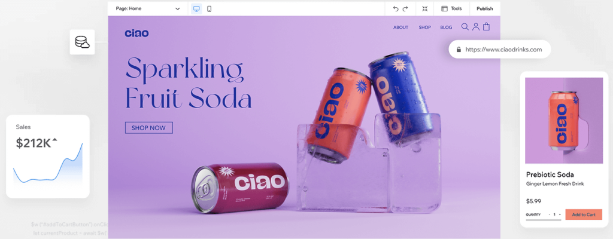
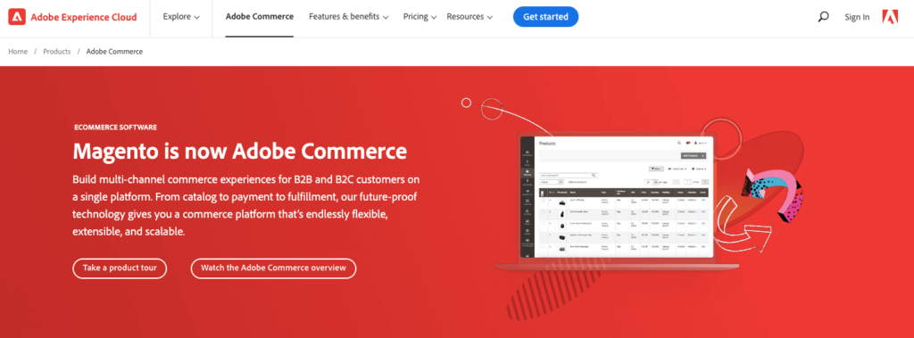

CMS Platforms Comparison: An Ultimate Guide to Choose the Best CMS in 2024
Choosing the Right CMS Platform
Choosing the right CMS platform is extremely important regardless of the purpose of your site. And you should be aware of all the essential considerations while choosing it.
The appropriate CMS platform will save your time, money, and energy. Alternatively, choosing the wrong CMS platform will make the site creation process difficult for you.
As a beginner, you might face problems to pick the right platform for your website among a wide range of options. To help you out of this situation, in this guide, we are going to discuss the top 7 CMS platforms for you.
Also, we will be sharing the checklist and CMS platforms comparison table to choose the right platform. So, let’s dive into the details!
What is a CMS Platform and Why It’s Popular
A content management system (CMS) is an application that is used to manage content, allowing multiple contributors to create, edit and publish. Content in a CMS is typically stored in a database and displayed in a presentation layer based on a set of templates like a website.
A CMS platform enables you to create websites without having prior coding knowledge. Usually, web pages are written in HTML, CSS, and JavaScript programming languages. So, if you want to create a website, you have to know at least these programming languages.
CMS removes this barrier. Now you can create a website without writing a single line of code using a CMS platform, no matter if you are a teacher, lawyer, entrepreneur, or student. This feature of CMS platforms makes them so popular nowadays.
If you focus on the above pie chart, you can easily understand how CMS platforms are dominating the web.
Combinedly, CMS has 68.9% of the market share. And non-CMS has 31.1% of the total market share.
Also, most CMS platforms are easy to use, easy to maintain, open source, and secure. This is why more than 70 Million live website owners are using CMS to create and manage their websites.
7 Best CMS Platforms for Your Website in 2024
.png)
There are more than 200 CMS platforms available around you. We have selected the top 7 CMS platforms out of this huge list.
- WordPress
- Shopify
- Wix
- Squarespace
- Joomla
- Drupal
- Adobe Commerce
Now we are going to discuss every CMS platform in detail. So, let’s get started with the first one- WordPress!
1. WordPress- Best Open Source Platform
You may have heard the name of WordPress. This is the most popular and used CMS platform by far.
WordPress powers more than 40% of the web and in terms of CMS, WordPress holds more than 64% market share.
WordPress was first introduced on May 27, 2003, by its founders, American developer Matt Mullenweg and English developer Mike Little.
Initially, WordPress was released as a blogging site. But after the successive releases of WordPress new versions, nowadays it’s used for creating all types of websites, from small websites like portfolios to complex websites like eCommerce stores with tons of products.
Key Features of WordPress
- Easy to use and setup
- Has more than 60,000 free plugins & 5,000 free themes
- Easy to create SEO-friendly URLs, categories, and tags
- Helpful large WordPress communities
- Unlimited design & customization options
Downside of WordPress
- WordPress is a self-hosted platform, so you’ll be responsible for managing things like security and backups
- Using unreliable and too many plugins can slow down your site
- You have to keep your theme and plugins always updated, otherwise, your site could be compromised anytime
WordPress Pricing Plans
WordPress is a freemium CMS platform. You can use its free version without paying a single penny. But you have to buy a domain and hosting to install and set up WordPress.
Also, there is a premium version of WordPress. The pricing starts at $4 for a personal site. Also, there are plans for $8, $25, and $45 for Premium, Business, and eCommerce categories respectively.
A free domain and hosting are included in every premium plan. That means you don’t have to buy a domain and hosting plan separately while using the WordPress premium version.
WordPress Best for
Basically, WordPress is for everyone. You can create almost any kind of website using WordPress. So, WordPress is recommended for you, no matter if you are planning for a simple website or a complex website with loads of traffic and transactions.
2. Shopify- All in One eCommerce Platform
Shopify is the best CMS platform for creating and managing eCommerce websites. It’s a hosted platform. This means you won’t need to buy hosting, install any software, or manage things like updates and backups.
The Snowdevil founders launched Shopify in June 2006. Currently, it has more than 6.2% CMS market share.
The platform is easy for anyone to use and doesn’t require any coding or development skills. If you know how to navigate the web, you can build and manage eCommerce content with Shopify.
Key Features of Shopify
- Out-of-the-box flexibility to create and manage an eCommerce store
- PayPal is integrated as Shopify’s default payment gateway
- Availability of lots of extensions and themes
- Don’t need to upgrade if you make over a certain dollar amount in sales
- Shopify has 24/7 support through live chat, email, and even phone
Downside of Shopify
- Your costs can end up quite high, especially if you want to add lots of third-party apps to your store
- You can’t avoid transaction fees if you use a third-party payment gateway
- Adding custom fields such as text boxes or file upload options, whilst doable, is unnecessarily complicated (or involves purchasing an app)
Shopify Pricing Plans
There is a 14 days trial version of Shopify. That means you can explore and use Shopify for 14 days without paying a single penny.
Also, there are three premium plans for Shopify.
Basic: $29 per month.
Shopify: $79 per month.
Advanced: $299 per month.
Shopify Best for
Shopify is the best solution for creating any type of eCommerce store. So, if you are planning to create a small or complex eCommerce store, you can rely on Shopify.
3.Wix - Free Website Builder
Wix is an easy-to-use cloud-based website builder founded in 2006 by Avishai Abrahami, Nadav Abrahami, and Giora Kaplan. It powers more than 3.4% of all CMS websites.
Key Features of Wix
- Easy to set up and configure, even for beginners
- Drag and drop system for designing websites
- 500+ ready-to-use templates
- Regular updates with new tools and designs
Downsides of Wix
- Wix-branded subdomain in free version
- Cannot change template once chosen
- Limitations on eCommerce features in lower-tier plans
Wix Pricing Plans
- Free with Wix-branded domain and ads
- Combo: $8.50/month
- Unlimited: $12.50/month
- VIP: $24.50/month
Best for
Small websites like restaurants, accommodations, and small businesses.
4.Squarespace - All in One SaaS Platform
Squarespace, founded in 2004 by Anthony Casalena, powers more than 3% of all CMS websites.
Key Features of Squarespace
- Extremely easy to use
- 130+ responsive templates
- Free SSL included with all plans
- Unlimited storage and bandwidth
- Strong eCommerce platform
Downsides of Squarespace
- Limited customization outside template presets
- No support for third-party apps, plugins, or extensions
Squarespace Pricing Plans
- Personal: $16/month (no eCommerce)
- Business: $27/month (includes eCommerce)
Best for
Blogs, portfolios, and eCommerce sites with premium plans.
5.Joomla - Award-Winning CMS Platform
Joomla is another free and open-source CMS platform. It’s not as popular as WordPress. Joomla was released on September 22, 2005, and it gradually grabbed more than 12% market share before 2010.
After that Joomla is consistently losing its market share from 12% to 2.6% as of now.
As Joomla is also a CMS platform, so usually it’s compared with WordPress. But unlike WordPress, Joomla is a little complex platform to work on. To get the maximum out of a Joomla site, you need to be a tech-savvy person.
But it offers more out-of-the-box customization features than most other CMS platforms.
Key Features of Joomla
- Has more than 6,000 free extensions in the Joomla directory
- Allows to create websites without writing a single line of code (though it’s a developer-friendly platform)
- The online community is available to ask for help
- Availability of free themes
- 1 click installation feature makes it easy to install and setup
Downsides of Joomla
- Joomla is a bit complicated, even sometimes you have to hire a developer if you don’t have technical knowledge
- Web development terminology featured in the control panel is not beginner-friendly
- Lack of compatibility between different modules, extensions, and plugins
Joomla Pricing Plans
Joomla itself is free. You just need to buy a domain and hosting to launch a site using Joomla.
But you have to pay for Joomla tools like DOCman, FILEman, LOGman, and so on. Also, you can check the bundle plan to get all the premium tools, extensions, and modules in one place. The bundle plan starts at $99 followed by $199 and $399.
Joomla Best for
Joomla is best for professional websites managed by multiple people. It has excellent tools for managing users, which makes it a popular choice for membership-type sites.
6.Drupal - Free and Open Source Platform
Drupal was published in 2001 by Dreis Buytaert. It is not as popular as WordPress or Joomla in terms of CMS market share.
In 2024, Drupal has a 1.8% CMS market share.
Drupal is a highly flexible, open-source CMS targeted to a wide pool of developers, marketers, and agencies. The CMS allows marketers with more basic experience to create a site from a template, or for developers to create a site that can handle large volumes of data and heavy traffic.
Key Features of Drupal
- It’s a secured platform, at least more secure than WordPress and Joomla
- Official community to ask for any kind of help
- Built-in modules help to expand a site’s functionalities
- Offers module support for free
- More than 48,000 modules and 3,000 themes available for you
- Allows to handle thousands of pages and traffic at the same time
Downsides of Drupal
- Requires coding knowledge of PHP, CSS, and HTML to customize a site
- Managing the platform, such as upgrading to a new version, can be time-consuming
Drupal Pricing Plans
Drupal has a free version to download and use. Also, if you want to use its premium modules or themes, you have to pay as per your consumption.
Drupal Best for
Drupal is best for creating and handling complex websites. It’s the CMS behind some major websites, including The Economist’s site and a number of university sites.
We would like to recommend Drupal to those who are comfortable with coding and development. There is definitely a learning curve, and it’s not for beginners.
7.Adobe Commerce (Magento) - Open Source eCommerce Platform
Adobe Commerce (formerly known as Magento) is the last but not least CMS platform on our list. The first beta Magento version was launched in August 2007, with the vision to make the eCommerce website creation journey easier.
As of we writing this content, Adobe Commerce/Magento has almost 1% CMS market share.
This software is not for beginners. It’s mostly used by mid-market and enterprise businesses and B2B organizations that need complete customization at scale.
Key Features of Adobe Commerce
- Highly customizable
- Availability of lots of third-party extensions lets add as many extra features as needed
- Allows to connect several payment gateways. Also, PayPal, Bank Transfer, and Cash on Delivery are supported by default
- Offers the most secured payment options
- Manage multiple stores in various locations, using different languages and currencies
- Truly SEO-optimized platform
Downsides of Adobe Commerce
- Adobe Commerce requires a high enough amount of space and memory on the server, otherwise, the site slows down
- Initial setup and customization are more complicated than many other CMSs
Adobe Commerce Pricing Plans
As Adobe Commerce is an open-source platform, so you can use it for free. But you have to buy your domain and hosting to use Adobe Commerce.
If you want to use the Adobe Commerce premium version, you have to contact the sales team to know the pricing plan. You can visit their pricing page to ask for the price by inputting your email address into the opt-in box.
However, Adobe Commerce price starts at around $22,000/year, which puts it outside the budget of many new businesses.
Adobe Commerce Best for
Adobe Commerce is best for large eCommerce store owners who need to manage multiple stores in various locations. Big brands like Nike, Ford, and Coca-Cola are using Adobe Commerce to manage their sites.
CMS Platforms Comparison Table - All the Crucial Data in One Place
Have a quick look at the following comparison table to get all the important data of CMS platforms in one place.
| Platform | Release Year | Market Share | Themes | Security (1/5) | Ease of Use (1/5) | Starter Package Pricing |
|---|---|---|---|---|---|---|
| WordPress | 2003 | 64% | 8,000+ | 3 | 5 | Free |
| Joomla | 2005 | 2.6% | 1,000+ | 4 | 3 | Free |
| Drupal | 2001 | 1.8% | 3,000+ | 5 | 2 | Free |
| Adobe Commerce (Magento) | 2007 | 1% | Varies | 5 | 2 | Free (Basic) |
| Squarespace | 2004 | 3% | 130+ | 4 | 4 | $16/month |
| Wix | 2006 | 3.4% | 500+ | 3 | 5 | Free (Basic) |
Which one is the most popular CMS platform?
WordPress is the most popular CMS platform with a whopping 64% CMS market share. This means all the websites that are built with CMS, among them more than 64% of websites use WordPress as their CMS platform.
How do I choose a CMS platform?
While choosing a CMS platform for you, take these steps into consideration:
- Ease of use
- Design flexibility
- Popularity
- Features
- Security
- Pricing
Is Drupal better than WordPress?
Using WordPress, you can create any type of website, no matter if it’s a simple or complex website. On the other hand, Drupal is best suited for creating a bit complex website. In terms of security, Drupal is more protected than WordPress.
Is Shopify a CMS?
Yes, Shopify is a CMS platform. But it’s more like an eCommerce site builder. So we can say Shopify has always been an e-commerce platform first and a Content Management System (CMS) second.